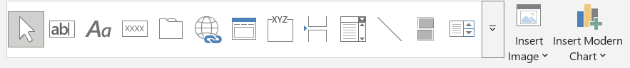
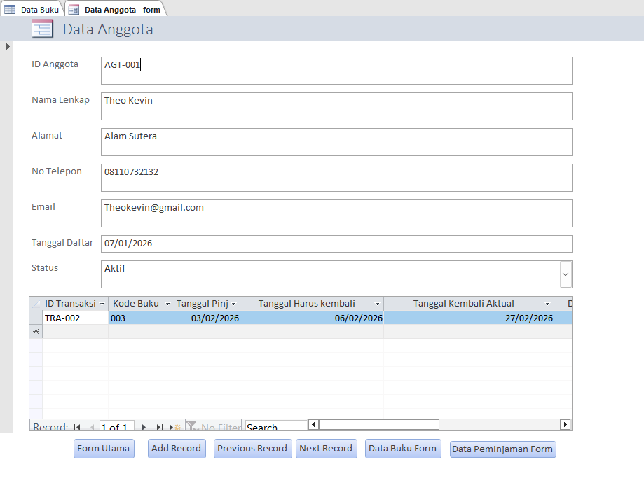
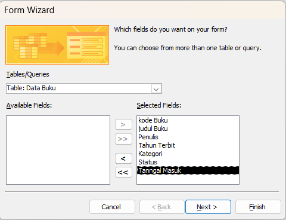
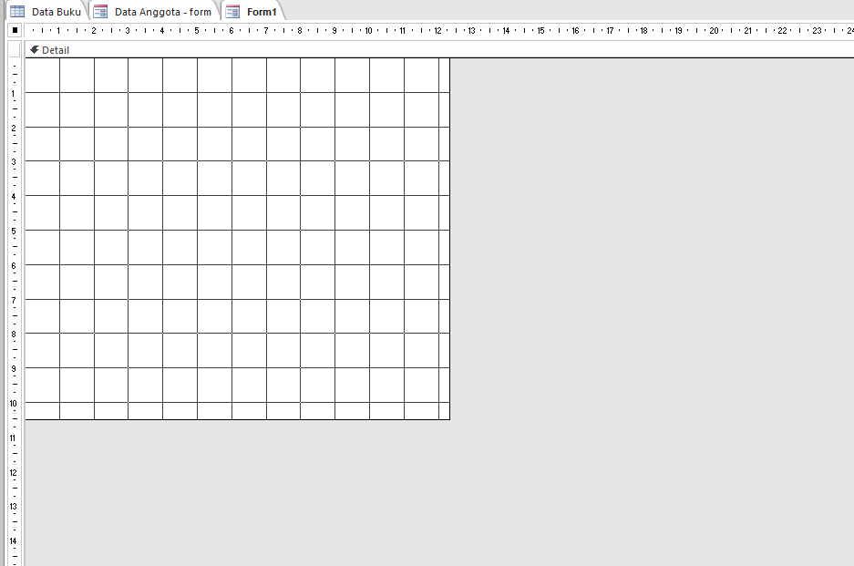
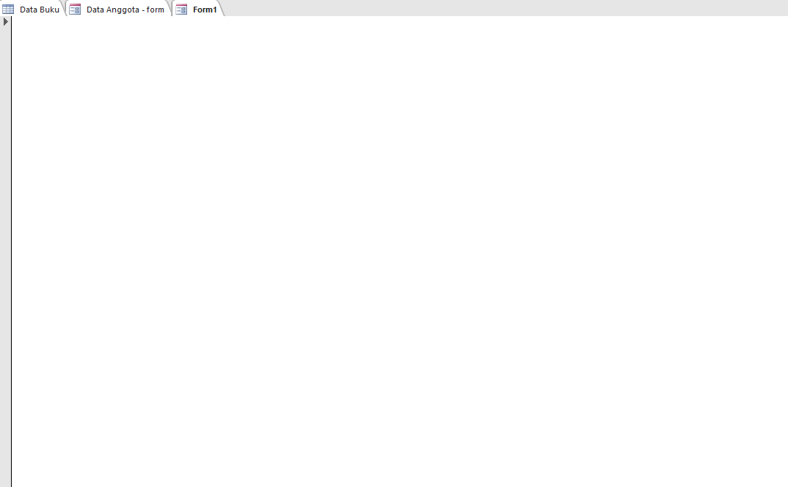
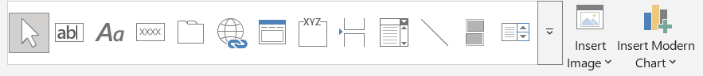
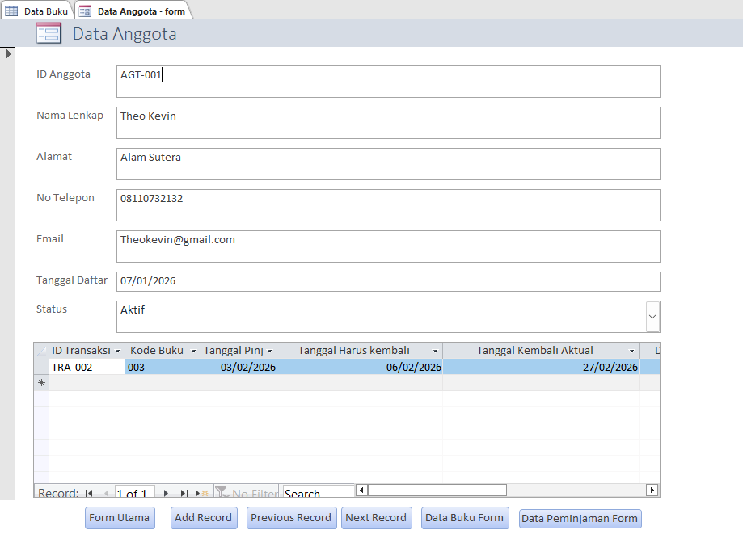
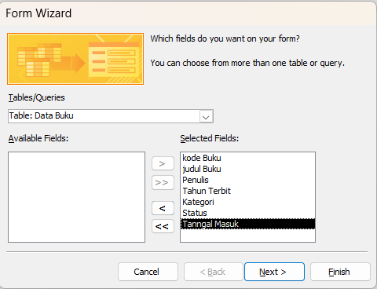
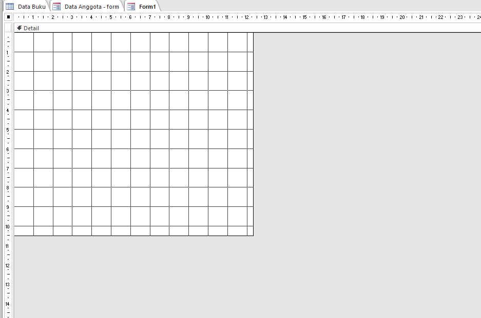
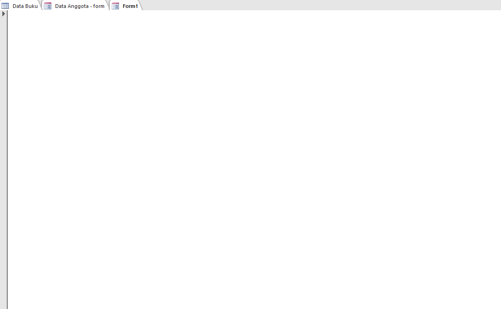

Table
What is a table?
+
Table
The Table is used to store data in a structured format consisting of rows and columns. In Microsoft Access, you can choose between Datasheet View and Design View.
In the Datasheet View, you can look at your Data Field and Data Record. You can add and change your data record in this view, but can't change the properties and format of the data field.
In the Design View, you can add and change the field name, change the data type of the field, and change the properties of the field.
The data types include Short Text, Long Text, Number, Large Number, Date/Time, Currency, Auto Number, and many more.
The properties include Field Size, Format, Input Mask, Caption, Default Value, Required and many more.
Field Size -> The maximum capacity for a text or a specific type of data that the field can hold
Format -> Controls how the data is displayed in the tables, forms, queries, and reports
Input mask -> A template for the characters that gives a specific format for the data in a given field
Caption -> Display user-friendly or easy to understand for the field names in a table
Default Value -> A value that automatically entered in the field when a new record is created
Required -> Forces the user to input value in the given field, doesn't allow null value


 








